Detention Reality Experience
Horror-Movie Logic Meets Fire-Code Logic
The exhibition adapts Detention, the suspense-horror PC game Red Candle Games released in 2017 to widespread acclaim, marking the team's first attempt at turning a single-player game into a multi-layered immersive experience. A 991.737㎡ version of Cuihua High School was rebuilt from the ground up at Songshan Cultural and Creative Park, with a classroom zone, restroom zone, principal's office, music room, counseling room, infirmary, and the "Endless Corridor." Visitors take on the role of a reading-club member, stepping into the loop the game's protagonist, Fang Ray-shin, experiences.
Sixty Years of Wear, Built From Scratch
We collected genuine 1960s Taiwanese school-campus objects on the ground: a classic Tatung fan, a black rotary-dial telephone, an old dial radio, wooden double desks and chairs, a hand-crank alarm siren, propaganda-era slogan frames, and old-style censer altars. Anything we couldn't source was custom-fabricated based on historical research and finished with professional aging techniques, until material, color, and wear patterns were indistinguishable from real period artifacts.
Even the chalk handwriting on the blackboard, the typeface of warning slogans like "Report Communist Spies," and the formatting of official documents were researched to match the era exactly.
Walls were coated in cement paint using a slapping technique, a splatter technique, and high-pressure air-drying, layering up peeling walls, water stains, wall seepage, and grime. Wooden desks and chairs were aged with hand-carved scratches, scorching, and sandblasting. Metal window frames and filing cabinets got a dimensional rust-effect coating. Every aged surface was finished with a scratch-resistant clear protective coat, so the look wouldn't fade or chip during transport between venues or under heavy visitor contact.
Fear That Doesn't Depend on What You Can See
A 3D soundscape, delivered through multiple hidden directional speakers, placed radio static, distant footsteps, rain, a school bell, and a low-frequency heartbeat around the space to create psychological unease. A scent-engineering system used precision micro-vaporization diffusion to release damp aged wood, metallic blood, burning incense, and infirmary disinfectant into specific zones, triggering deep memory and fear directly.
Pneumatic and infrared-triggered mechanisms responded to visitors' footsteps along the route, setting off flashing lights, doors and windows slamming shut, and falling objects. NPC actors worked from concealed hiding points and ambush routes, coordinated with lighting and sound so every scare landed; the timing of every mechanism and every ambush was choreographed and tested repeatedly, until the sound of a scream became the most authentic feedback in the whole experience.
Classroom windows used real water-mist effects to simulate rain hitting glass, synced with cold air, scent, and sound. Select set walls and props were partially coated in fluorescent paint, switched under UV light to reveal hidden messages at specific story beats for a sudden jolt in the dark.
A Bright Green Exit Sign, at War With the Whole Mood
This was the real core challenge of the project. The game experience demanded extremely low light, a maze-like sense of enclosure, and large amounts of aged timber. Fire code demanded high-visibility exit signage, wide accessible circulation, and strictly fire-retardant materials. The two sets of requirements pulled in opposite directions, and we used four invisible-design techniques to hold onto the game's horror atmosphere in full while staying fully compliant.
The exit signage came first: a bright green EXIT sign left on at full brightness would have wrecked the low-light mood entirely. We built a smart evacuation-lighting system that, under normal conditions, used DMX central control to bring exit signage down to the lowest illuminance the code allows, or used shrouded fixtures casting only a faint downward glow. The moment a sensor triggered or someone pressed the emergency button, every hidden fixture and every bright green exit sign in the venue switched to 100% emergency brightness within 0.1 seconds, and every electronic hidden door unlocked at once.
Materials were the second conflict: the sheer volume of wood and vintage props failed Class-1 fire-retardancy requirements by default. Every wooden prop and finish material went through deep nano-fire-retardant impregnation, then got a Class-1 certified faux-flame-resistant composite coating on the surface, keeping the hand-aged texture intact while meeting code. Fabric props like curtains, student uniforms, and puppet-theater drapes went through colorless, odorless nano-fire-retardant impregnation and earned a national fire-retardant label.
Circulation was the third conflict: the main route kept a clear width of 1.2 to 1.5m or more to meet public-venue evacuation standards, while the walls used staggered placement, hanging debris, and low-light dark corners to create the visual sense of a corridor barely wide enough for one person. Hidden inside the long corridor and the midpoint of major sets were disguised secret doors, blended into the aged wall surface, functioning as staff-only passages under normal conditions and swinging open directly for rapid evacuation in an emergency.
Safety under low light was the fourth conflict: the entire zone kept a flat floor with no steps, any minor level changes were handled with gentle ramps, and baseboards carried an ultra-low-power LED strip at a wavelength that doesn't disrupt dark-adapted vision, preventing trips without breaking the darkness overhead.
Result
Four invisible-design solutions solved one contradiction: a frightening exhibition and a safe building didn't have to be a choice between the two.
Have a project in mind?
Get in Touch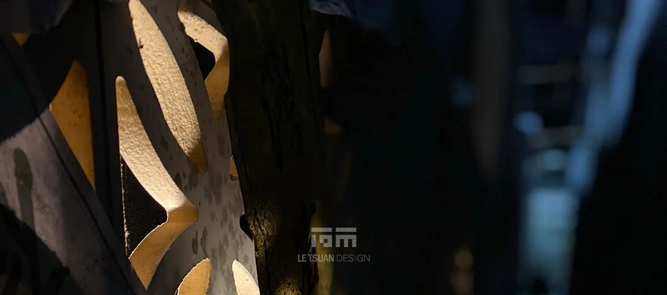
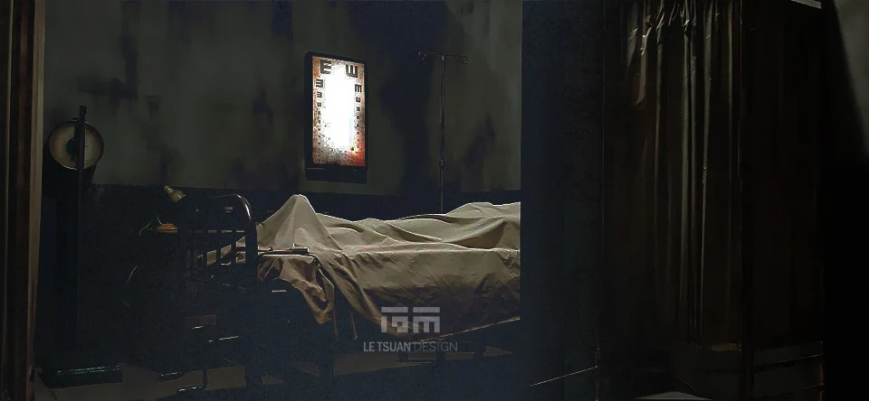
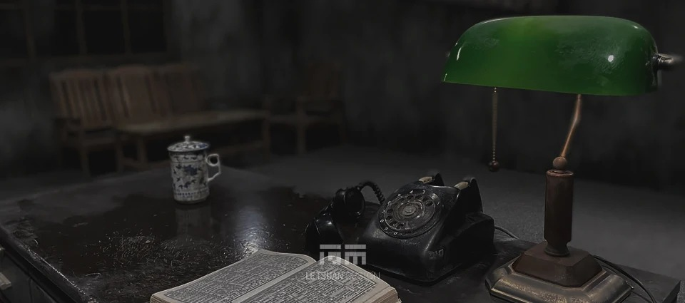
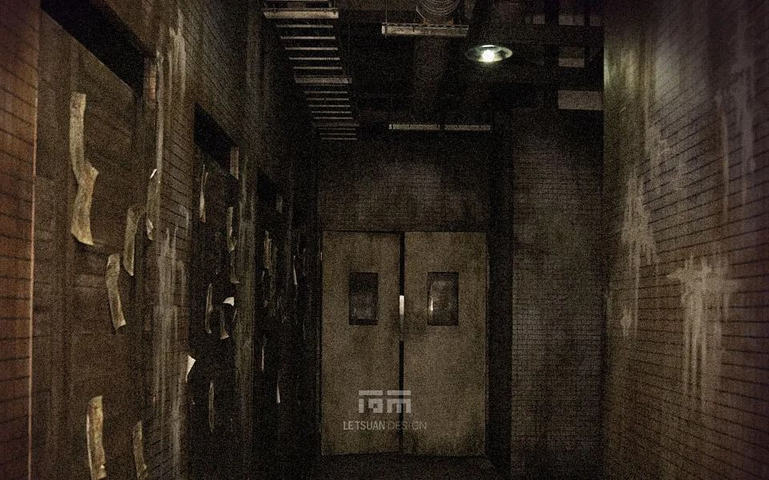
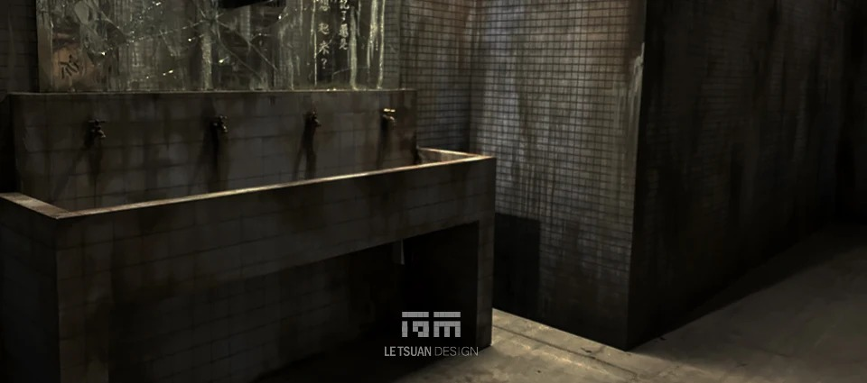
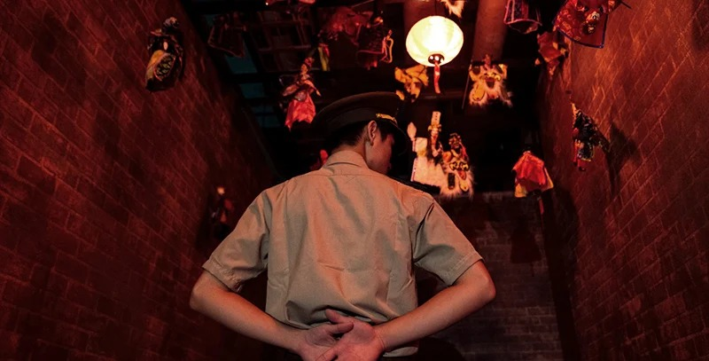
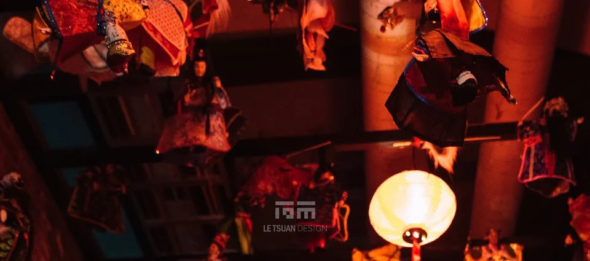
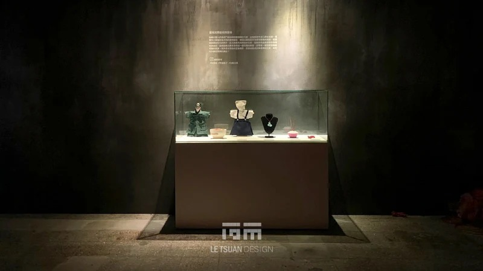
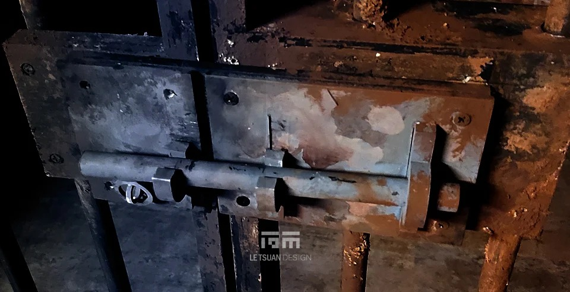
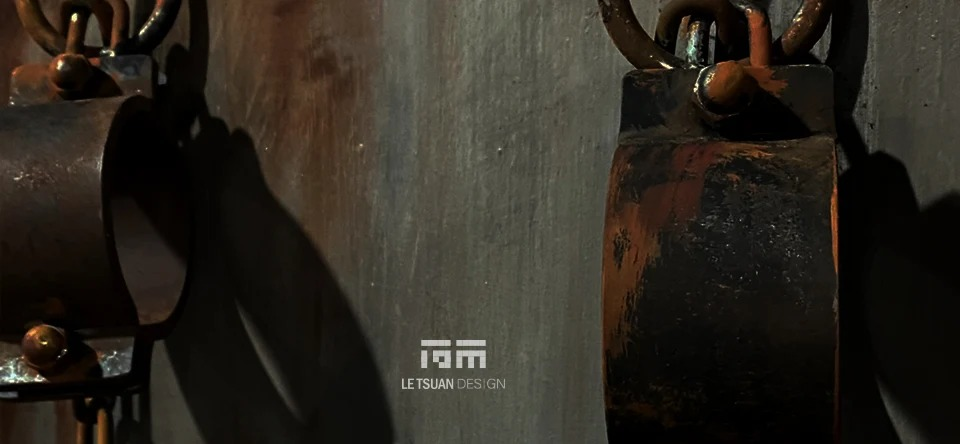
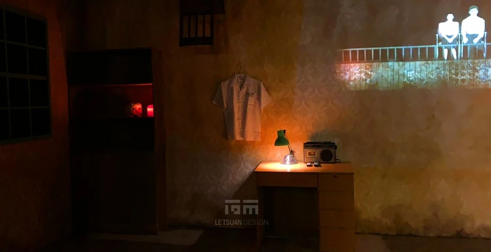
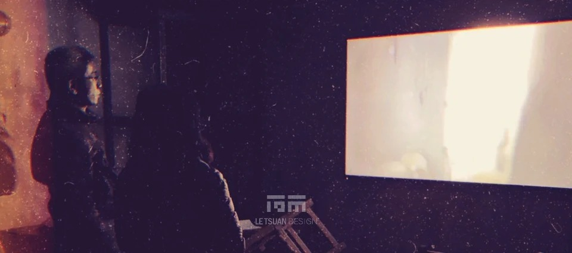
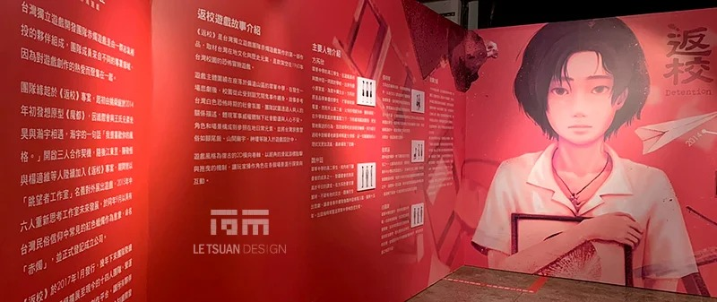
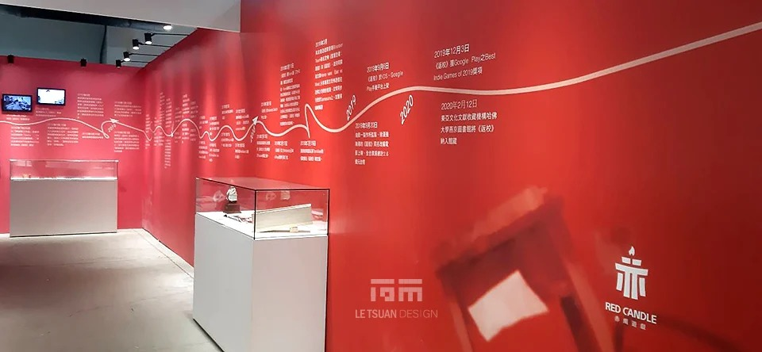
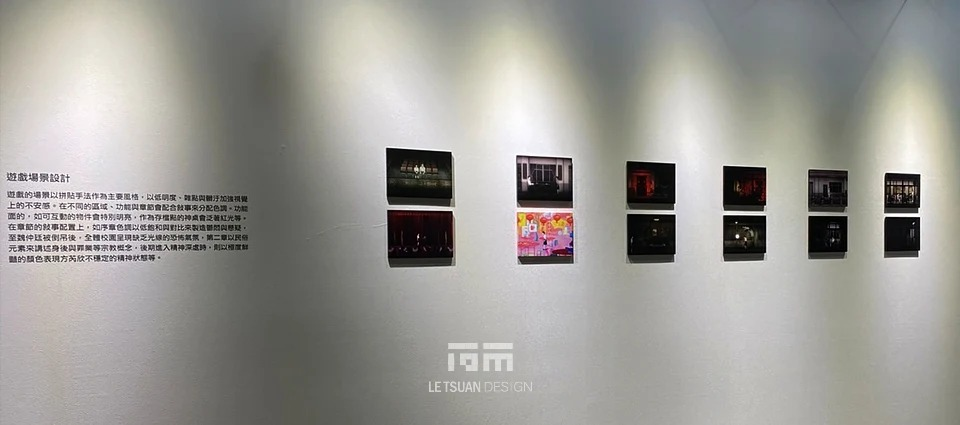
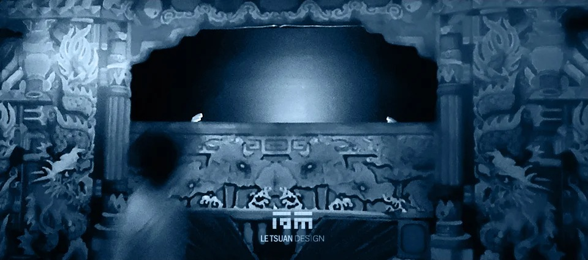
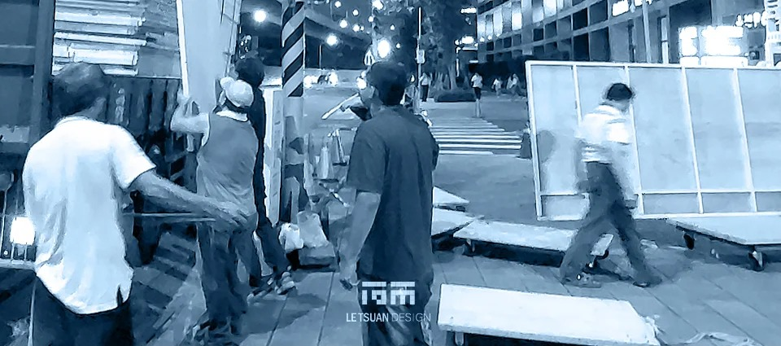